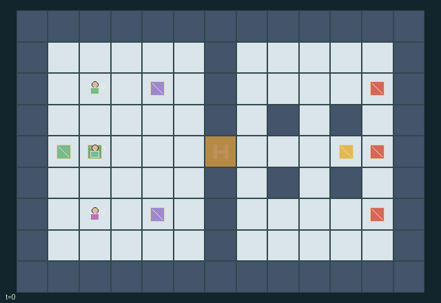

GI079 · Switchback Relay | Cover the breach, bring the core home

Maintain a passable relay gate, retrieve the physical core from the turret bay, and bring it to the extraction cell (1,4) with positive hull and at least one surviving squad member.
Identity and original contract
3 independently actionable roles; 13 discrete commands per role; 414 native observation columns per role; original horizon 160 steps. Declared per-step reward range: -5 to 6. Observation regime: partially_observable.
Source SHA-256: fcda29220e23fbd33e45d5c960bc6417993978a6af8f64bc89ac5ac649f8bf44
The objective, rewards, population, map and horizon remain original. A preview is not a success claim.
Objective and gameplay
Maintain a passable relay gate, retrieve the physical core from the turret bay, and bring it to the extraction cell (1,4) with positive hull and at least one surviving squad member.
Two spatial relay charge buffers control a shared choke point. A carrier sacrifices weapons and support abilities. Scout marking changes allies actual bolt damage, engineer jamming changes future firing opportunity, bulwark fields/guard absorb incoming bolts, and all abilities compete for a finite shared support pool.
- Two left-side relay terminals feed the central gate. Charge leaks without channeling; both must remain positive for passage. Occupants hold the gate open until they clear it.
- Move among actual walls and cover. Movement cannot enter another live squad member or a live turret cell; simultaneous empty-cell conflicts use rotating priority.
- Bolts travel one cardinal cell per step. Walls stop them. Enemy bolts damage squad or an uncarried core; guards and temporary bulwark fields absorb them.
- Distant shots cannot penetrate an unmarked turret. A scout scan broadcasts turret state and makes each hit deal two damage; a shot fired within two cells can deal one without marking.
- Bulwark shield and scout scan cost one shared support; engineer jam costs two and pauses nearby turret firing clocks. Every role draws from the same finite pool.
- A core carrier cannot shoot, use support abilities or guard. Dropping and another squad member picking up can transfer the burden.
- Fire and support create noise that affects turret aim acquisition. Locked aim and countdown are real state; launched bolts follow their recorded direction.
- Refill at the base consumes a finite supply unit, restores one own ammunition and adds one shared support.
- Core radio and terrain are public. Other dynamic entities are visible within radius five; marked turrets are broadcast to all roles.
- Reach extraction with an intact core. Core destruction or loss of the whole squad fails; otherwise the 160-step horizon truncates.
Ending: Extraction with positive core hull and a living squad member succeeds. Zero core hull or no living squad member fails. Otherwise truncate at 160. Natural completion has priority at the horizon; terminal raw state is absorbing.
What this game explores
Resource commons & externalities: An action changes a persistent resource or burden that another role also encounters. Compare extraction with maintenance and record the downstream resource trajectory.
Joint transport & shared access: Positions, load geometry, occupancy and persistent access constrain whose action can succeed next. Distinguish physical handoff, shared controls and simultaneous force from a cosmetic cooperation label.
Survival, protection & rescue: Protection and repair alter another role's future feasible actions. Record losses, exposure, rescue and infrastructure as well as delivery; survival is determined by the actual kernel.
These are questions supported by rule structure, not observed learning effects.
Play it: operating walkthrough
crucibles play --game gi079Keep Python running and open its printed address. Select this game, set a seed and press Create session. The game itself is always English.
Assign a role range to Host with Assign / take over, or Assign all roles. Invite a second participant with Create player invitation, then assign a disjoint subset. Every original role is available.
For every owned role choose a legal command and press Queue. Arrow keys / WASD queue a declared directional action for the current role camera when available. Space or Advance one joint step advances everyone together. Non-directional games use the selectors.
Unqueued roles use the labelled untrained uniform-legal policy. Take over or release roles before the next step without resetting. Full-state debug is privileged and permanently logged; role cameras preserve permissions. Close the session to retain logs. Server restart does not restore sessions.
Complete command reference
IDs and English labels exactly match the manifest. Availability depends on role, resources, location and phase. An available action can still have no productive effect.
0·Wait
1·Move north
2·Move east
3·Move south
4·Move west
5·Fire north
6·Fire east
7·Fire south
8·Fire west
9·Role support: shield / scan / jam
10·Channel adjacent relay, otherwise pick up or drop core
11·Guard; bulwark also covers adjacent squad
12·Refill ammunition and shared support at base
Roles and capability identifiers
These original role names describe capabilities, not interchangeable skins. Check each owned role's legal selector before planning handoffs.
agent_0·Bulwark: projects one-cell shields and guards neighboring squad members
agent_1·Scout: broadcasts and exposes turret armor with a scan
agent_2·Engineer: interrupts turrets and replenishes relay charge faster
Information and observation permissions
Terrain, gate, relays, supply, extraction and the core radio beacon are public. Each role sees its own state and entities within Manhattan radius five; a scout mark broadcasts the marked turret state to every role for eight turns. Invisible local rows are zero and carry an explicit visibility bit. Radius sensing does not model wall occlusion. Renderer uses the same entity masks; no full-state tactical information belongs in a role view.
The GIF is full-state debug and may reveal hidden entities or private state. Train on obs[agent], not the picture, state tree or another role's private row. Field slices and visibility are in the original manifest.
Reinforcement-learning integration
import jax
from crucibles_jaxmarl import make
env = make("gi079")
key = jax.random.PRNGKey(0)
key, rk, ak, sk = jax.random.split(key, 4)
obs, state = jax.jit(env.reset)(rk)
actions = env.sample_actions(ak, state)
obs, state, rewards, dones, info = jax.jit(env.step_env)(sk, state, actions)
done = dones["__all__"]Observations are float32 vectors of width 414; actions are scalar int32; masks have 13 entries. Supply all 3 roles each transition. Masked sampling is an engineering reference, not a trained learner.
step_env retains terminal data without reset. step performs outer autoreset and keeps terminal data in info["raw_state"] and info["raw_observation"]. Use dones["__all__"] for episode boundaries; separate completion, failure and time limit in analysis.
JIT or vmap equal identities and shapes. Split independent reset, policy and transition keys. Group different shapes explicitly; do not shrink the population or horizon. Host rendering stays outside training.
Training questions and fair evaluation
Define valid completion from the objective before fitting. Preserve original rewards and also report real deliveries/services, losses, resource state, unresolved episodes and per-role returns. Animation is not a reward signal.
An action changes a persistent resource or burden that another role also encounters. Compare extraction with maintenance and record the downstream resource trajectory.
Positions, load geometry, occupancy and persistent access constrain whose action can succeed next. Distinguish physical handoff, shared controls and simultaneous force from a cosmetic cooperation label.
Protection and repair alter another role's future feasible actions. Record losses, exposure, rescue and infrastructure as well as delivery; survival is determined by the actual kernel.
Compare memory, communication or centralized critics under matched actor information. Declare critic access; keep actor inputs role-filtered. Match partner/opponent distributions, masks, compute and checkpoint selection. Final tests never enter fitting or selection.
Independent training runs or source-pairing blocks are inferential units; episodes from one policy are not independent training replications. Save hashes, keys, versions, device, time and cost. Negative, zero, failed and indeterminate outcomes are valid. No trained checkpoint or target score is supplied.
Classification and evidence
Overlapping editorial labels are reading aids, not proof of novelty, difficulty, strategic equivalence or learning effects.
- Resource commons & externalities
- Evidence
manifest.task.objective: Maintain a passable relay gate, retrieve the physical core from the turret bay, and bring it to the extraction cell (1,4) with positive hull and at least one surviving squad member.
- Joint transport & shared access
- Evidence
manifest.task.objective: Maintain a passable relay gate, retrieve the physical core from the turret bay, and bring it to the extraction cell (1,4) with positive hull and at least one surviving squad member.
- Evidence
manifest.task.interaction: Two spatial relay charge buffers control a shared choke point. A carrier sacrifices weapons and support abilities. Scout marking changes allies actual bolt damage, engineer jamming changes future firing opportunity, bulwark fields/guard absorb incoming bolts, and all abilities compete for a finite shared support pool.
- Evidence
manifest.task.observation_access: Terrain, gate, relays, supply, extraction and the core radio beacon are public. Each role sees its own state and entities within Manhattan radius five; a scout mark broadcasts the marked turret state to every role for eight turns. Invisible local rows are zero and carry an explicit visibility bit. Radius sensing does not model wall occlusion. Renderer uses the same entity masks; no full-state tactical information belongs in a role view.
- Survival, protection & rescue
- Evidence
manifest.task.objective: Maintain a passable relay gate, retrieve the physical core from the turret bay, and bring it to the extraction cell (1,4) with positive hull and at least one surviving squad member.
- Evidence
manifest.task.interaction: Two spatial relay charge buffers control a shared choke point. A carrier sacrifices weapons and support abilities. Scout marking changes allies actual bolt damage, engineer jamming changes future firing opportunity, bulwark fields/guard absorb incoming bolts, and all abilities compete for a finite shared support pool.
- Evidence
manifest.actions.5: Fire north
Source, receipts and preview limits
The world-only English GIF replays saved untrained legal actions through the original kernel. At most 25 actual endpoints include initial and terminal state; no invented interpolation. It is full-state debug, not the role observation.
Original source, observation slices, manifest and mechanism
Native receipt · Presentation receipt
Engineering passes do not establish learning. Nonzero floating differences remain recorded and undetermined; no new tolerance was introduced. Human scores remain unverified.